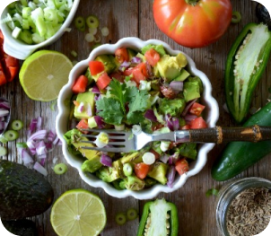
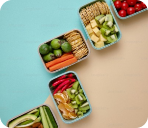
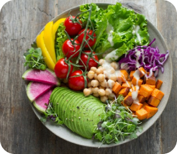
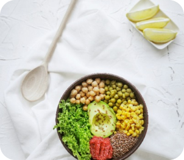
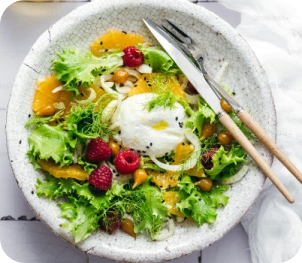

In our journey to health and fitness, the food we consume plays an important role. Not only does it fuel our daily activities, but it also has the power to improve our mood, increase our mental clarity, and prevent a myriad of health problems. This guide is your gateway to understanding and embracing healthy eating habits that are sustainable and satisfying.
Why Choose Healty food?
Healthy food is the cornerstone of a dynamic lifestyle. They are packed with essential nutrients, vitamins, and minerals that our bodies need to function optimally. By choosing healthy foods over processed options, you are investing in your long-term health and well-being.
Best Tips to Choose Healty Foods
Choosing healthy foods is an important step in maintaining our health and well-being. One of the main principles is to choose fresh, minimally processed foods, such as fruit, vegetables and whole grains. It is also important to pay attention to nutritional balance, by choosing foods that contain complex carbohydrates, protein, healthy fats, fiber, and sufficient vitamins and minerals. Also pay attention to food labels to check the nutritional content and additional ingredients used. Avoid foods high in added sugar and excess salt, and limit consumption of saturated and trans fats. Choose healthy sources of protein, such as lean meat, fish, nuts, and low-fat dairy products. It's also important to pay attention to portion sizes and avoid overeating. Drink lots of water to maintain body hydration. Variation in food consumption is also important, so that the body gets a variety of nutrients. Avoid fast food and eat mindfully, without doing other activities. Plan your healthy meals to help you stay committed to an overall healthy lifestyle. By following these tips, we can make healthier food choices to support our health and well-being.
Adopt a Healthy Lifestyle
Transitioning to a healthier diet doesn't have to be a difficult task. Start small by making one or two changes at a time, and gradually, these will become part of your daily routine. Remember, healthy eating is about balance and enjoying a variety of foods that are healthy for the body and soul.
We hope this guide inspires you to make wise choices and explore the wonderful world of healthy food. Your body deserves the best fuel. It's time to start feeding him properly.
Healty Is Important
Come on, starting today we commit to giving our bodies healthy and nutritious food!